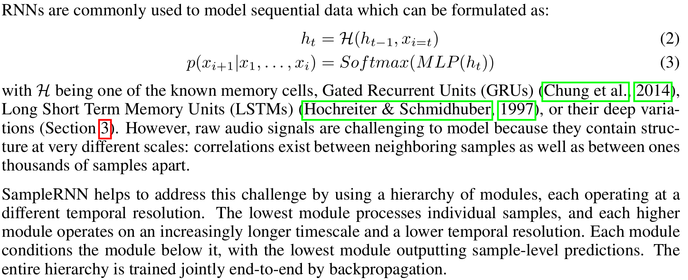
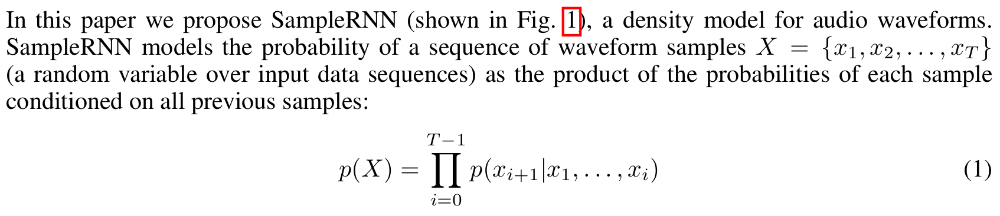

SampleRNN[1] uses recurrent neural networks to find patterns in audio waveforms.
Since I can't describe it better than the paper itself, this is their rationale for why RNNs are suitable for audio waveforms:

Note the important link to the causality of WaveNet's causal convolutions is that the memory cell uses past memory to compute present samples, or h[t] = H(h[t-1]).
SampleRNN is an autoregressive model like WaveNet, meaning that it computes a probabilistic model of what the next most likely sample to generate is, using the following probability distribution:

A key concept in SampleRNN is the use of a hierarchy of modules operating at different temporal resolutions to capture the temporal patterns present in audio and music. This is related to how WaveNet used dilated convolutions to learn features at wider timescales than immediately consecutive samples.
The authors of SampleRNN also agree with WaveNet that discretizing the inputs gives better results than operating on the float samples directly:
We use a Softmax because we found that better results were obtained by discretizing the audio signals (also see van den Oord et al. (2016)) and outputting a Multinoulli distribution rather than using a Gaussian or Gaussian mixture to represent the conditional density of the original real-valued signal.
The reference implementation by the original authors of the paper, sampleRNN_ICLR2017, is less readable (to me) than the PRiSM-SampleRNN implementation, so I'll use the second for the code dissection.
2-tier vs. 3-tier SampleRNN
Something to note is that various sources mention that 2-tier SampleRNN creates better music than 3-tier SampleRNN:
There's also a 3-tier option, but we initially had better results with 2-tier, so we don't use 3-tier. It doesn't have the modifications we made to 2-tier.
Table 1 and Figure 4 also show the 2-tier SampleRNN outperforming the 3-tier model in terms of likelihood and human rating respectively, which is very counterintuitive as one would expect longer-range temporal correlations to be even more relevant for music than for speech. This is not discussed at all, I think it would be useful to comment on why this could be happening.
Author's reply:
"Why 2-tier is outperforming the 3-tier model for music?"
- We did not expect that, but for any dataset and architecture structure, there is an optimal depth. Considering that this is a deep RNN (which introduces a form of recurrent depth, here very large) and the hypothesis that it is difficult to train such architectures in the first place, it is possible that alternative training procedures could yield better results with a deeper model.
Recall that in the SampleRNN paper, the multiple tiers of the RNN determined the learning of audio patterns at different temporal scales. This is reflected in the following diagram from the paper:
Higher RNN tiers map to wider temporal scales [3]
The lowest temporal scale (consecutive samples) represents very low-level audio features (e.g. timbre), while higher scales can (hypothetically) go as far as representing repeating choruses or verses minutes apart. As such, it's interesting to note that 2-tiers, or only two temporal scales of learning, performed better than 3-tier, which should hypothetically be enforcing even longer-scale temporal patterns (and music has temporal patterns as coarse as minutes apart, e.g. a repeating chorus).
However, as the author says, 2-tier SampleRNN may have a depth that makes it more optimal considering the training architecture of SampleRNN (or in other words, there needs to be an analysis of alternative training architectures to make 3-tier beat 2-tier).
SampleRNN configuration
I'll summarize the available SampleRNN hyperparameters and other customizeable steps compared across the original 2017 ICLR implementation, the Dadabots fork, the PRiSM fork which I use throughout the rest of this page, and finally my own modifications to the PRiSM parameters after experiment 0:
Original
Dadabots
PRiSM
Descr
RNN layers
4
5
4
Quality of results (dadabots note that 5 learns music better than 4)
Tiers
2 or 3
2 or 3 (2 recommended for good music)
3
Tiers of RNN (more = wider temporal timescale, but...*)
Frame sizes (corresponds to tiers)
16
16
16,64
Samples apart between low and high timescales
Sample rate
16000 (fixed)
16000
16000
Sample rate of training/generating waveform (lower = faster learning, better able to learn long-timescale patterns)
Training input
No details
Chop albums into 8s + 1s overlap
Chop albums into 8s + 1s overlap
Suggestions on how to prepare training data
Epochs
Not customizeable
Not customizeable
100
Entire cycles of training on the same data (more = possibly better learning, but not necessarily)
The frame sizes 16, 64 correspond to the additional tiers of SampleRNN (the first tier is always n = 1, or consecutive samples). A 2-tier SampleRNN architecture has a wider temporal scale of learning at 16 frames, while a 3-tier SampleRNN architecture learns at 16 and 64 frames.
Preprocessing
The preprocessing uses the same mu-law encoding as the WaveNet but without the one-hot encoding. The 256-bit quantized integer is used directly instead of converting it into a 256-length vector.
Training layers - stack of hierarchical RNN modules
Loss function
The loss function and training parameter optimization code is very similar to the WaveNet code, down to the optimizer factory. From train.py:
These are passed into the SampleRNN model code (samplernn/model.py):
def train_step(self, data):
(x, y) = data
with tf.GradientTape() as tape:
raw_output = self(x, training=True)
prediction = tf.reshape(raw_output, [-1, self.q_levels])
target = tf.reshape(y, [-1])
loss = self.compiled_loss(
target,
prediction,
regularization_losses=self.losses)
grads = tape.gradient(loss, self.trainable_variables)
grads, _ = tf.clip_by_global_norm(grads, 5.0)
self.optimizer.apply_gradients(zip(grads, self.trainable_variables))
self.compiled_metrics.update_state(target, prediction)
return {metric.name: metric.result() for metric in self.metrics}
Like with WaveNet, a predicted waveform is produced from the model during training and then compared to the input waveforms to compute the loss. The actual prediction is done with self(x, training=True), which in Python would be implemented by the object's call() function:
The values are 16-sample frames for the middle tier, and 64-sample frames for the upper tier.
Here we see a key distinction between SampleRNN and WaveNet. WaveNet uses the weights of the dilated convolution network to predict samples with knowledge of different temporal scales built in. SampleRNN is using patterns learned at broad temporal scales to condition the lower temporal scales - this means that SampleRNN's choice of high-level/long-term temporal feature feeds into the subsequent choices for the low-level temporal feature predictions.
The optimizers are the same. The loss function is in fact the same as WaveNet, except that WaveNet used TensorFlow 1's softmax_cross_entropy_with_logits functionoldapi_loss, while SampleRNN uses a slightly different APInewapi_loss,SparseCateoricalCrossentropy. The difference is explained simply that if your data is one-hot encoded (i.e. 256-bit mu-law integers expanded into a vector of 256 0s or 1s, like WaveNet), you would use the softmax cross entropy function, whereas if they're integers (like SampleRNN), you would use a sparse softmax cross entropy function.
We can also see the input data is batched as in WaveNet, indicating similar use of mini-batch iterative training (aka mini-batch Stochastic Gradient Descent):
The above code is the equivalent of the training loop of WaveNet, where the SampleRNN model exposes its trainable variables and the Tensorflow library is leveraged to use the loss function above to train the model.
Note a detail of SampleRNN is that they're using the keras EarlyStoppingkeras earlystop which stops training if it predicts that the model is not improving enough to be worthwhile. In WaveNet, the training proceeds for as many steps as the user requested.